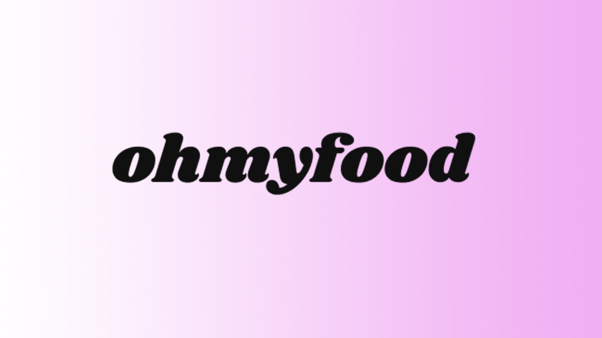
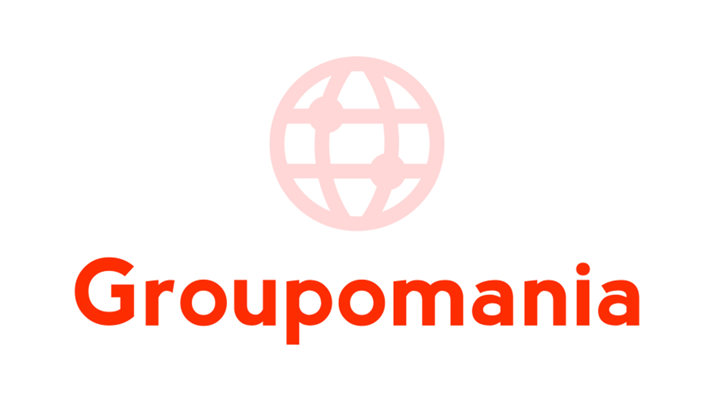

Portfolio
A Propos
Je m'appelle Flavien MAYET, j'ai débuté dans le milieu professionnel en m'orientant dans l'audiovisuel en tant que caméraman et monteur vidéo pour la web TV de l'Université de Limoges.
J'ai travaillé durant juillet-août 2016 comme vendeur multimédia chez Boulanger, magasin multimédia et électroménager. Mon travail a été d'alterner entre la relation avec la clientèle et de m'occuper des rayons smartphones et ordinateurs portables.
Ensuite, mon souhait était de partir pour les États-Unis, mon rêve depuis plusieurs années. Je voulais voyager en dehors de la France, approfondir ma langue anglaise, découvrir une autre culture afin de revenir en France avec plus de bagages et de corde à mon arc.
C'est la raison pour laquelle, j'ai choisi le programme d'au pair. La mission : s'occuper d'enfants dans une famille américaine durant un an.
Pour cela, j'ai dû effectuer des heures dans plusieurs centres de loisirs à Auxerre pour me permettre d'avoir de l'expérience auprès des enfants.
A mon retour en France, je voulais continuer dans tout ce qui touchait dans le numérique et les nouvelles technologies.
C'est là où j'ai découvert le métier de DÉVELOPPEUR WEB.
J'ai commencé à m'intéresser sur ce métier et puis je me suis mis à me former sur Elephorm puis sur Udemy, en commençant par les langages de bases comme le HTML/CSS, puis est venu ensuite le JavaScript.
J'ai décidé par la suite, d'effectuer une formation en ligne pour devenir développeur web par moi-même et qui s'appelle OpenClassrooms.
Durant cette formation, j'ai continué à approfondir dans les langages de bases et à continuer mon apprentissage sur le côté back-end.
Portfolio
Reservia
Découvrez mon premier modèle fictif réalisé en HTML et CSS sur un site de voyage en France où vous pouvez réserver votre hôtel.
Découvrir le Projet

Ohmyfood
Ohmyfood est un site de gastronomie française entièrement réalisé en HTML et CSS. Il présente différentes cartes de menu du restaurant.
Découvrir le Projet
La Chouette Agence
Détecter et modifier les problèmes sur le modèle original en terme de SEO afin de respecter les standards pour l'utilisateur. C'est le rendu final.
Découvrir le Projet
Orinoco
Orinoco est un site de commerce électronique fictif qui vend des caméras en ligne à ses clients. Le premier projet réalisé en JavaScript.
Code Source
So Pekocko
So Pekocko est un site portant sur les sauces piquantes. Un projet uniquement fait en back-end, en utilisant les technologies comme NodeJS et MongoDB.
Code Source

Groupomania
Création d'un réseau social. Le projet final de la formation de développeur web avec OpenClassrooms est réalisé en HTML/CSS, JavaScript, Bootstrap, NodeJS et MYSQL.
Code SourceCompétences
HTML

CSS
JAVASCRIPT

React
NODEJS

MONGO DB
MYSQL
Expériences
OpenClassrooms
Nov 2020
Juil 2022
Juil 2022
Un an et demi de formation pour devenir développeur web. A travers ses cours, des travaux ont été réalisés avec différents langages tels que HTML/CSS, JavaScript, NodeJS, MySQL.
- France
Cultural Care
Juin 2018
Juil 2019
Juil 2019
Plus d'un an passé aux États-Unis en tant qu'au pair. Mon lieu de vie était dans l'État du Connecticut où mon travail consistait à m'occuper des enfants d'une famille. Une année de découverte de la culture américaine et de voyages à travers les USA et en Amérique centrale.
- États-Unis /État du Connecticut
Boulanger - CDD
Juil 2016
Août 2016
Août 2016
Un emploi saisonnier durant l'été sur la découverte du métier de vendeur multimédia. L'objectif était de vendre des produits de haute technologie et d'être présent pour le client afin de le satisfaire et de le conseiller dans sa demande.
- France
Service Civique
Audiovisuel Juil 2016
Août 2016
Audiovisuel Juil 2016
Août 2016
Cadreur et Monteur de la série vidéo des "Reporters Sans Manières" au sein de la WEB TV de L'Université de Limoges.
- France